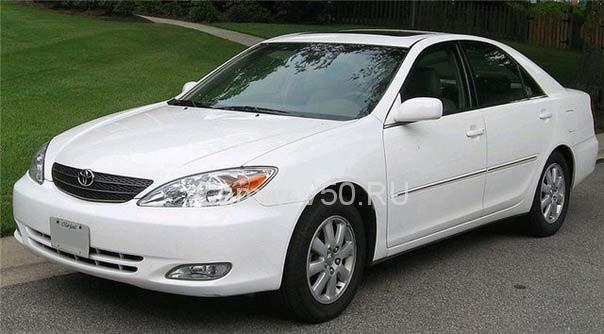
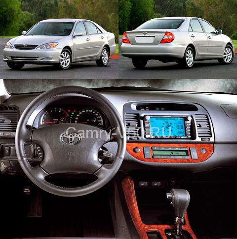
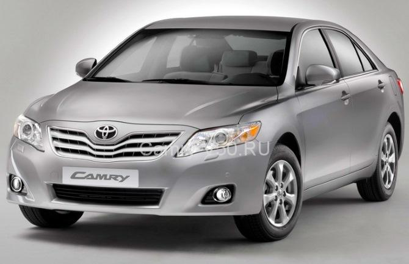
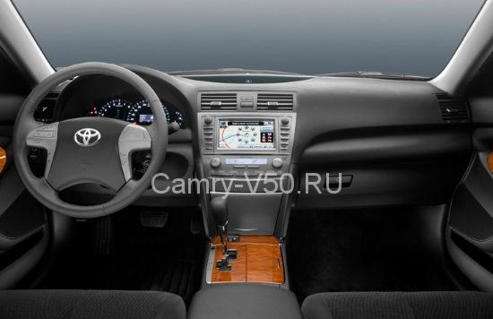
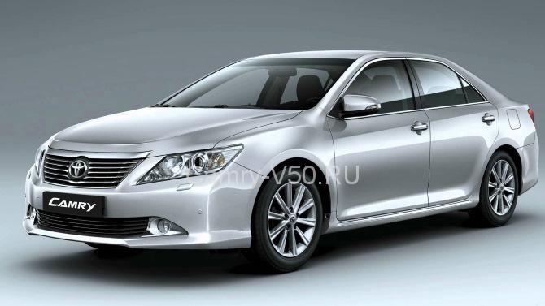
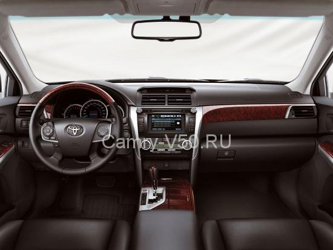
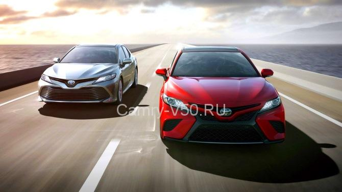
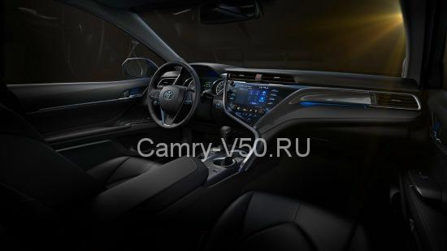

Главная особенность 5-го поколения Тойота Камри заключалась в том, что автомобиль получил мировое признание и популярность. Машину раскупали, словно горячие пирожки не только в США и Европе, но и в России. Японский производитель решил не экспериментировать и сосредоточил все усилия на доведении до совершенства всего одного кузова – «седан». В итоге его линии стали обтекаемыми и достаточно плавными, что благоприятно повлияло на аэродинамику транспортного средства.

Интерьер стал более уютным и комфортным из-за использования экологически чистых материалов. Об уровне комплектации говорит хотя бы тот факт, что в базовой комплектации присутствовала система ABS, несколько подушек безопасности и функция стабилизации движения.
Изменились и ходовые возможности машины:
Машина потеряла традиционные для кузова Камри прямые линии, уступив место современным веяниям. Именно в этот период и был заложен фундамент для экономического успеха автомобиля.
При разработке Тойот Камри 40 конструкторы и инженеры основательно потрудились над кузовом. Несмотря на всю свою массивность, автомобиль стал изящнее и визуально легче, чему поспособствовали плавные линии корпуса. Модель приобрела «нотки спортивности» и стремительности.

Модернизация затронула и «внутренности» транспортного средства:

Обратите внимание! Японский производитель в рамках 6-го поколения впервые начал оснащать свои автомобили гибридным бензоэлектрическим двигателем.

Новая машина может похвастаться великолепными кузовными линиями и элегантным внешним видом, в котором отчетливо прослеживается определенная статусность. Салон транспортного средства стал более комфортным за счёт дополнительного объёма. С технической стороны машина стала на порядок современнее:

Конструкторы сделали все возможное для устранения, допущенных в 6-м поколении просчетов. Также автомобиль избавили от плавности линий, заменив их на выраженные угловатые черты. Новая стилистика затронула оптику машины, которая стала более широкой. За счёт того, что транспортное средство увеличилось в размерах, оно могло конкурировать с моделями классом выше.

На подмостках автосалона в Детройте японский производитель представил на суд общественности Toyota Camry уже 8-поколения. Можно с уверенностью утверждать, что это принципиально новый автомобиль с необычной спортивной внешностью. Архитектура интерьера пересмотрена радикальным образом. Впрочем, взглянем под капот этого «жеребца»:

Впервые в истории дизайн интерьера ориентирован на водителя, настраивая на динамичный стиль вождения и предоставляя максимальный комфорт. Повысилось качество отделочных материалов салона, изменились рычаги и кнопки управления, а задний диван, создавший Camry славу одного из самых вместительных седанов бизнес-класса, по-прежнему предоставляет максимальный комфорт и радует простором.